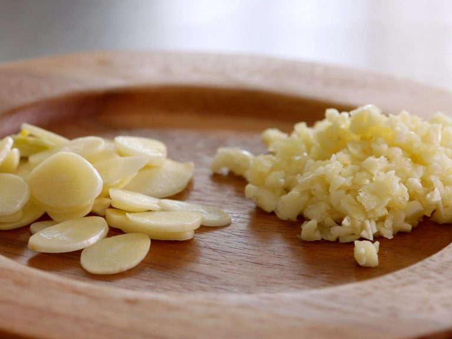
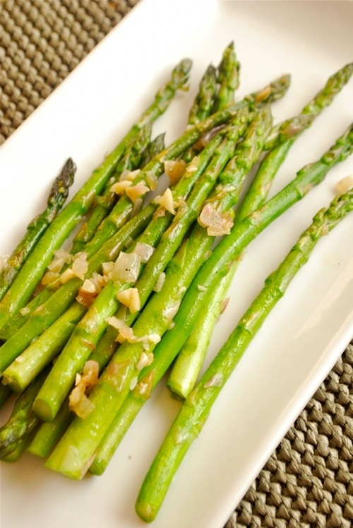

500g măng tây xanh
2 muỗng canh dầu lạc (dầu đậu phộng)
4 tép tỏi
Các gia vị khác: tiêu, bột ngọt, muối, nước mắm
Tỏi đem bóc vỏ, băm nhuyễn. 

Trên đây là công thức nấu món măng tây xào tỏi đơn giản, dễ làm cho bữa cơm gia đình thêm hấp dẫn. Chỉ cần chú ý lựa chọn loại măng tây tươi ngon cùng một vài mẹo xào đơn giản là bạn đã có một món ăn thơm ngon rồi.
Ngoài măng tây xào tỏi với dầu lạc, bạn có thể dùng dầu oliu, dầu mè để xào. Hoặc xào măng tây với một số nguyên liệu khác như tôm, thịt bò cũng cho những hương vị hấp dẫn riêng.
Măng tây là một loại rau được khá nhiều người ưa dùng bởi nguồn dinh dưỡng tuyệt vời từ chúng. Hiện nay, măng tây đang được trồng chủ yếu tại một số tỉnh miền Bắc và Đông Nam Bộ. Tuy nhiên, để nói đến độ ngon, cho năng suất cao và hàm lượng dinh dưỡng cao phải kể đến tỉnh Ninh Thuận. Măng tây ở đây chủ yếu là loại măng tây xanh và măng tây tím. Riêng loại măng tây trắng được đánh giá là loại măng tây chứa hàm lượng dinh dưỡng cao nhất trong tất cả các loại măng tây. Tuy nhiên, tại Việt Nam hiện chưa trồng được loại này.
Ngoài ra, để đảm bảo an toàn cho sức khỏe, bạn nên chọn mua măng tây sạch hoặc măng tây hữu cơ. Các loại măng tây hữu cơ không sử dụng phân bón hóa học, thuốc kích thích tăng trưởng, đảm bảo tốt cho sức khỏe cả gia đình. Mua măng tây xanh hữu cơ Ninh Thuận.
Hy vọng với bài hướng dẫn này, bạn có thể thực hiện được món măng tây xào tỏi vừa giòn xanh vừa thơm ngon cho bữa ăn thêm dinh dưỡng. Chúc các bạn thực hiện thành công